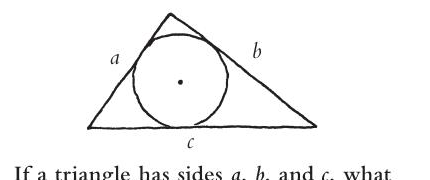
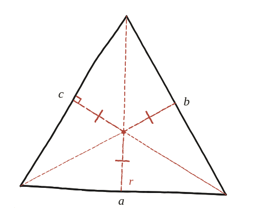

Si un triangle té costats a, b i c, quin és el radi de la circumferència inscrita?

El centre, no el cercle
La peça de la construcció que fa tota la feina no és la circumferència en si: és el seu centre, i el fet que aquest punt és exactament a la mateixa distància —el radi r— de cadascun dels tres costats del triangle.
Partir el triangle en tres
Unint el centre del cercle inscrit amb els tres vèrtexs del triangle, el triangle gran queda partit en tres triangles més petits —un per cada costat. Encara que aquests tres triangles tinguin bases diferents (a, b i c), tenen una cosa en comú com a mesura: tots tres tenen la mateixa altura, exactament r, perquè el radi cap a cada costat hi arriba perpendicular.

L'àrea de cada peça
Cadascun dels tres triangles petits té per base un costat del triangle gran i per altura r: les seves àrees són (1/2)ar, (1/2)br i (1/2)cr respectivament.
Sumar-les i igualar a l'àrea total
Sumant les tres peces: Àrea total = (1/2)ar + (1/2)br + (1/2)cr = (1/2)r(a+b+c). Aïllant r: r = 2·Àrea / (a+b+c) —el doble de l'àrea, dividit pel perímetre sencer.
r = 2·Àrea/(a+b+c). Surt de partir el triangle en tres peces des del centre del cercle inscrit —cadascuna amb un costat del triangle com a base i el radi r com a altura comuna—, sumar-les i igualar-ho a l'àrea total. És el mateix moviment de "veure l'àrea des del centre" que ja va aparèixer amb el pentàgon regular a la Qüestió 39, ara amb tres peces desiguals en lloc de cinc d'iguals.
Comprovació
Triangle 3-4-5 (rectangle, àrea=6): r=2×6/(3+4+5)=12/12=1 —el radi del cercle inscrit d'un 3-4-5 és, efectivament, 1.